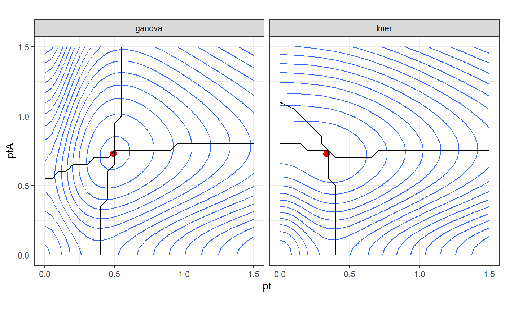

Comparison-of-the-shapes-of-the-likelihood.RmdIn this tutorial, we compare the shapes of the likelihood using lmer() and gANOVA() on an example.
We need the follwing packages:
We can simuluate data from a model with 12 participants and a factor with 4 levels (and 3 replications per levels per participants):
set.seed(43) df <- expand.grid(pt = paste0("P",str_pad(1:12,width = 2,pad = "0")), A = paste0("A",1:4), r = 1:3, stringsAsFactors = F)%>% select(-r)
# add +(1|pt) random intercept df<- df%>% nest(data=-pt)%>% mutate(ranef_pt = rnorm(n(), sd = 1.6))%>% unnest(data) # add +(1|pt:A) random interaction df<- df%>% nest(data=-c(pt,A))%>% mutate(ranef_ptA = rnorm(n(), sd = 3))%>% unnest(data) # add an error term df<- df%>% mutate(err = rnorm(n(),sd = 4)) # create the dependant variables df <- df%>% transmute(pt = pt, A= A, y = ranef_pt +ranef_ptA + err)
We use the maximum likelihood estimation for both estimation:
m_lmer <- lmer(y ~ A+ (1|pt) + (1|pt:A), data=df, contrasts = list(A = contr.sum), REML = F) m_gANOVA <- gANOVA(y~ A + (1|pt|A), data=df, contrasts = list(A = contr.sum), REML = F)
We store the estimated parameters. There are 2 \(\theta_i\)’s associated to the random intercept and to the random interaction:
df_opt = tibble( "ranef" = c("ptA", "pt"), "lmer" = getME(m_lmer,"theta"), "ganova" = getME(m_gANOVA,"theta"))%>% pivot_longer(c(lmer, ganova),names_to = "model",values_to = "xy")%>% pivot_wider(names_from = "ranef",values_from = xy)
Then we evaluate the optimal function for values of the parameters from 0 to 1.5, and compute the likelihood:
df_ll <- expand_grid( pt = seq(from =0, to =1.5, by = 0.05), ptA = seq(from =0, to =1.5, by = 0.05))%>% mutate(lmer = map2_dbl(pt,ptA,function(x,y){getME(m_lmer,"devfun")(c(y,x))}), ganova = map2_dbl(pt,ptA,function(x,y){getME(m_gANOVA,"devfun")(c(y,x))}))%>% pivot_longer(c(lmer,ganova), names_to = "model", values_to = "log-L")%>% mutate(`log-L` = `log-L` *(-1/2))
We can compute the conditional optimum to highligh the ridge lines of the likelihood:
df_h<- df_ll%>% group_by(pt,model)%>% filter(rank(-`log-L`, ties.method="first")==1)%>% ungroup()%>% arrange(pt) df_v<- df_ll%>% group_by(ptA,model)%>% filter(rank(-`log-L`, ties.method="first")==1)%>% ungroup()%>% arrange(ptA)
Finally, we create a contour plot of the likelihood. In this case, the 2 parametrizations have the same likelihood at the optimal and the inference is the same. However using the gANOVA parametrization we have parameters almost orthogonal at the maximum. This behaviour comes from the orthogonalization of the random effects in gANOVA() and may produce an easier optimization.
df_ll%>% ggplot()+ geom_contour(aes(x = pt,y = ptA,z = `log-L`),bins = 18) + geom_point(data = df_opt,aes(x = pt,y = ptA),color="red",size = 3) + geom_path(data = df_h,aes(x = pt,y = ptA)) + geom_path(data = df_v,aes(x = pt,y = ptA)) + coord_fixed() + facet_grid(~model) + theme_bw()
